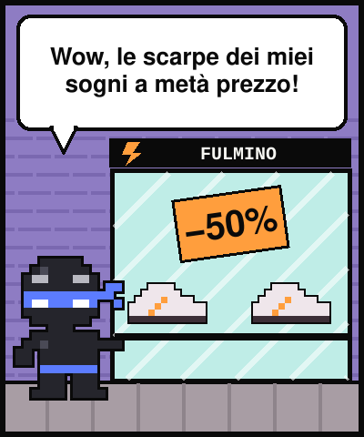
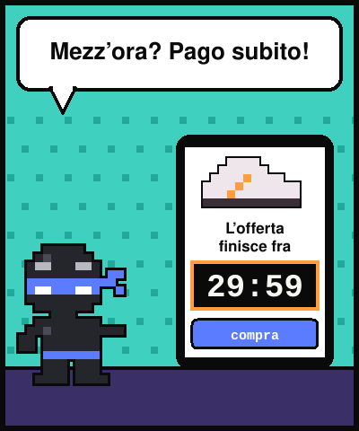
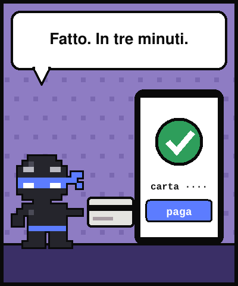
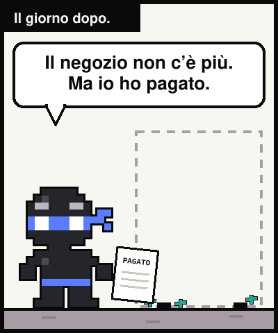
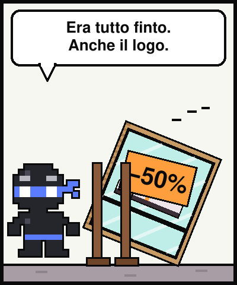
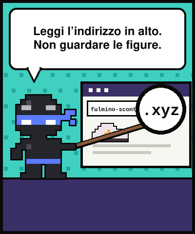
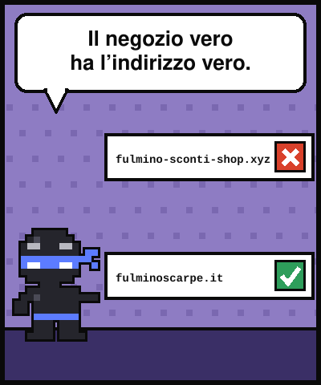
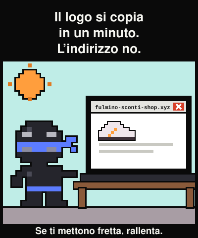

Lezione dal 2077 · n.009
Le scarpe giuste, il logo giusto, il prezzo dimezzato. Ho pagato in tre minuti. Il negozio esisteva solo per quei tre minuti.








Scarpe di marca, logo giusto, prezzo a metà. L'offerta finiva a mezzanotte, erano le undici e mezza. Ho pagato.
Le scarpe non sono mai arrivate. Dopo qualche settimana il sito non c'era più.
La Polizia Postale descrive siti che imitano graficamente negozi online ufficiali, con prezzi più bassi del mercato. Dopo il pagamento il venditore diventa irreperibile.
Il trucco è il tempo: il conto alla rovescia ti fa pagare prima di controllare.
«Il logo si copia in un minuto. Un negozio vero c'è ancora domani mattina.»